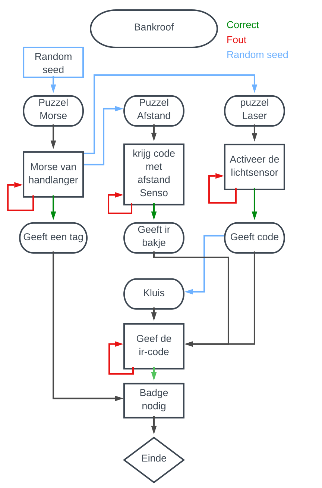

Introductie
Je wilt inbreken in een bank. Je moet eerst de juist keycard vinden van de bankmedewerkers. Als je de keycard hebt kan je de code van het alarm uitschakelen. Hierna zal je de lazers omzeilen en dan kan je naar de kluis gaan, om deze te openen moet je naar de code zoeken in de bank zelf.
Team
| Michiel Van Himbeeck | Web&Mobile | Random seed |
| Milan Vernimmen | Infrastructuur | Morse |
| Joran Buddaert | Elektronica | Afstand |
| Quinten Conil | Web&Mobile | Lazer |
| Thomas Anseeuw | Web&Mobile | Kluis |
Flowchart:
1. Random seed
Voor random seed te implementeren hebben we een library geschreven. deze roep je op met een start waarde en geeft dan array[5] terug. De eerste 4 array waarde zijn voor je
Code
CodeGenerator.h
#pragma once#include<Math.h> #define PI 3.14159265359 class CodeGenerator { public: static int* getRandomCode(int input); private: static double getAbs(double num); };
CodeGenerator.cpp:
#include"CodeGenerator.h" int* CodeGenerator::getRandomCode(int input) { const double multiplication = 1034.8123; double vorigGegenereerdGetal;//getal 1double nieuwGetal = getAbs(sin(input)) * multiplication * PI; int getal1 = floor(nieuwGetal); getal1 %= 10; vorigGegenereerdGetal = nieuwGetal;//getal2nieuwGetal = getAbs(cos(vorigGegenereerdGetal)) * multiplication; int getal2 = floor(nieuwGetal); getal2 %= 10; vorigGegenereerdGetal = nieuwGetal;//getal3nieuwGetal = log(vorigGegenereerdGetal) * multiplication; int getal3 = floor(nieuwGetal); getal3 %= 10; vorigGegenereerdGetal = nieuwGetal;//getal4nieuwGetal = getAbs(tan(sqrt(vorigGegenereerdGetal)) * multiplication); int getal4 = floor(nieuwGetal); getal4 %= 10; static int output[5]; output[0] = getal1; output[1] = getal2; output[2] = getal3; output[3] = getal4; double num = getAbs((getal1 + getal2) * (getal3 + getal4) + vorigGegenereerdGetal - nieuwGetal) * (multiplication / PI); output[4] = (int)num % 255; return output; }; double CodeGenerator::getAbs(double num) { return num > 0 ? num : -num; }
2. Puzzel morse
Uitleg
Je kan op een knopje drukken om de morsecode te laten spelen. Als je die hebt opgelost kan je die ingeven in de eerste keypad. Als de code juist is dan komt er op de eerste display “Leg de gekregen tag op de pad en hij zal programmeren.
Schema

Code
#include <CodeGenerator.h>
#include <Servo.h>
#include <Keypad.h>
#include <LiquidCrystal_I2C.h>
Servo myservo;
int bieper = 13; //Pin voor buzzer
int Eenheid = 200; //De tijd tussen elke actie
int freq = 300; //freq in Hertz
int button = 9;
String code = "";
String mijncode;
int servo = 12;
int teller = 0;
int meeTeGevenNummer; //dit nummer meegeven naar de volgende opdracht als input voor de random seed
int* array;
const byte ROWS = 4; // 4 rijen
const byte COLS = 3; // 3 kolommen
char keys[ROWS][COLS] = {
{'1','2','3'},
{'4','5','6'},
{'7','8','9'},
{'*','0','#'}
};
byte rowPins[ROWS] = { 2, 3, 4, 5 }; //Verbinding van rowpinsa
byte colPins[COLS] = { 6,7,8 }; // Verbinding van kolompins
Keypad keypad = Keypad(makeKeymap(keys), rowPins, colPins, ROWS, COLS);
LiquidCrystal_I2C lcd(0x27, 20, 4);
void setup() {
myservo.attach(12);
Serial.begin(9600);
Wire.begin(); // join i2c bus (address optional for master)
lcd.init();
lcd.backlight();
pinMode(servo, OUTPUT);
pinMode(bieper, OUTPUT);
pinMode(button, INPUT_PULLUP);
digitalWrite(servo, LOW);
int input = analogRead(A0); //verander dit door een random waarde (Serial.read)
array = CodeGenerator::getRandomCode(input);
for (int i = 0; i < 4; i++) {
code += array[i];
}
Serial.println(code);
meeTeGevenNummer = array[4];
Wire.beginTransmission(2); // transmit to device #2 puzzel2
Wire.write(meeTeGevenNummer); // sends one byte
Wire.endTransmission(); // stop transmitting
Serial.println("Voer de code in:");
lcd.print("Voer de code in:");
}
void loop(){
char key = keypad.getKey();
if (key) {
teller++;
lcd.setCursor(teller, 1);
lcd.print("*");
if (key == '*') checkCode();
else {
int num = key - 48; //1 als char - 48 geeft 1 als nummer
mijncode += num;
}
}
if (digitalRead(button) == 0) {
speelMorse(array[0]);
delay(400);
speelMorse(array[1]);
delay(400);
speelMorse(array[2]);
delay(400);
speelMorse(array[3]);
}
}
void checkCode() {
Serial.println(mijncode);
if (code == mijncode)
{
lcd.clear();
lcd.println("Goed gedaan!");
lcd.setCursor(0, 1);
lcd.println("De code is juist");
digitalWrite(servo, HIGH);
myservo.write(180);
delay(5000);
digitalWrite(servo, LOW);
}
else
{
Serial.println("Niet juist");
digitalWrite(servo, LOW);
lcd.clear();
lcd.setCursor(0, 0);
lcd.print("De code is fout!");
delay(3000);
}
mijncode = "";
teller = 0;
lcd.clear();
lcd.setCursor(0, 0);
lcd.print("Voer de code in:");
}
void speelMorse(int num) {
switch (num)
{
case 0:
speelStreep();
speelStreep();
speelStreep();
speelStreep();
speelStreep();
break;
case 1:
speelPunt();
speelStreep();
speelStreep();
speelStreep();
speelStreep();
break;
case 2:
speelPunt();
speelPunt();
speelStreep();
speelStreep();
speelStreep();
break;
case 3:
speelPunt();
speelPunt();
speelPunt();
speelStreep();
speelStreep();
break;
case 4:
speelPunt();
speelPunt();
speelPunt();
speelPunt();
speelStreep();
break;
case 5:
speelPunt();
speelPunt();
speelPunt();
speelPunt();
speelPunt();
break;
case 6:
speelStreep();
speelPunt();
speelPunt();
speelPunt();
speelPunt();
break;
case 7:
speelStreep();
speelStreep();
speelPunt();
speelPunt();
speelPunt();
break;
case 8:
speelStreep();
speelStreep();
speelStreep();
speelPunt();
speelPunt();
break;
case 9:
speelStreep();
speelStreep();
speelStreep();
speelStreep();
speelPunt();
default:
//doe niks
break;
}
}
void speelPunt() {
tone(bieper, freq);
delay(Eenheid);
noTone(bieper);
delay(Eenheid);
}
void speelStreep() {
tone(bieper, freq);
delay(Eenheid * 3);
noTone(bieper);
delay(Eenheid);
}
3. Puzzel Afstand
Uitleg
Bij deze puzzel moet je een afstandsensor geruiken afhankelijk van of je verder of dichter gaat krijg je een waarde. Als je deze waarden in het keypad ingeeft zal je het infrarood bakje krijgen.
Schema

Code
#include#include #include #include #define echoPin 11 // attach pin D2 Arduino to pin Echo of HC-SR04 #define trigPin 10 //attach pin D3 Arduino to pin Trig of HC-SR04 LiquidCrystal_I2C lcd(0x27,20,4); // defines variables long duration; // variable for the duration of sound wave travel int distance; // variable for the distance measurement int t=0; const int ROW_NUM = 4; //four rows const int COLUMN_NUM = 3; //three columns char keys[ROW_NUM][COLUMN_NUM] = { {'1','2','3'}, {'4','5','6'}, {'7','8','9'}, {'*','0','#'} }; byte pin_rows[ROW_NUM] = {9, 8, 7, 6}; //connect to the row pinouts of the keypad byte pin_column[COLUMN_NUM] = {5, 4, 3}; //connect to the column pinouts of the keypad Keypad keypad = Keypad( makeKeymap(keys), pin_rows, pin_column, ROW_NUM, COLUMN_NUM ); String password; // change your password here String SubStrng; String input_password; Servo myservo; // create servo object to control a servo int pos = 180; // variable to store the servo position void setup() { pinMode(trigPin, OUTPUT); // Sets the trigPin as an OUTPUT pinMode(echoPin, INPUT); // Sets the echoPin as an INPUT Serial.begin(9600); // // Serial Communication is starting with 9600 of baudrate speed input_password.reserve(32); // maximum input characters is 33, change if needed lcd.init(); // initialize the lcd lcd.backlight(); lcd.setCursor(0, 0); // move cursor to (0, 0) lcd.print("Welkom bij de"); // print message at (0, 0) lcd.setCursor(2, 1); // move cursor to (2, 1) lcd.print("2de opdracht"); // print message at (2, 1) delay(2000); Wire.begin(2); // join i2c bus with address #4 Wire.onReceive(receiveEvent); // register event myservo.attach(12); // attaches the servo on pin 12 to the servo object myservo.write(pos); } void receiveEvent(int howMany){ int x = Wire.read(); // receive byte as an integer Serial.println(x); // print the integer int* array = CodeGenerator::getRandomCode(x); Serial.print("Solution From codegenerator: "); for (int x=0; x<4; x++){ password = array[x]; Serial.print(testing[x]); } Wire.beginTransmission(3); // transmit to device #3 Puzzel lazer Wire.write(array[4]); // sends one byte Wire.endTransmission(); // stop transmitting Wire.beginTransmission(4); // transmit to device #4 Puzzel kluis Wire.write(array[4]); // sends one byte Wire.endTransmission(); // stop transmitting Serial.println(); } void loop() { while(t==0){ // Clears the trigPin condition digitalWrite(trigPin, LOW); delayMicroseconds(2); // Sets the trigPin HIGH (ACTIVE) for 10 microseconds digitalWrite(trigPin, HIGH); delayMicroseconds(10); digitalWrite(trigPin, LOW); // Reads the echoPin, returns the sound wave travel time in microseconds duration = pulseIn(echoPin, HIGH); // Calculating the distance distance = duration * 0.034 / 2; // Speed of sound wave divided by 2 (go and back) Serial.println(password); if(distance > 3 && distance < 5){ String SubStrng = password.substring(0,1); lcd.clear(); lcd.setCursor(0, 0); // move cursor to (0, 0) lcd.print("Het 1ste cijfer"); // print message at (0, 0) lcd.setCursor(5,1); lcd.print("is "+SubStrng); delay(100); } else if(distance > 9&& distance < 11){ String SubStrng = password.substring(4,3); lcd.clear(); lcd.setCursor(0, 0); // move cursor to (0, 0) lcd.print("Het 4de cijfer "); // print message at (0, 0) lcd.setCursor(5,1); lcd.print("is "+SubStrng); delay(100); } else if(distance > 15 && distance < 17){ String SubStrng = password.substring(2,3); lcd.clear(); lcd.setCursor(0, 0); // move cursor to (0, 0) lcd.print("Het 2de cijfer "); // print message at (0, 0) lcd.setCursor(5,1); lcd.print("is "+SubStrng); delay(100); } else if(distance > 21 && distance < 23){ String SubStrng = password.substring(3,4); lcd.clear(); lcd.setCursor(0, 0); // move cursor to (0, 0) lcd.print("Het 3de cijfer "); // print message at (0, 0) lcd.setCursor(5,1); lcd.print("is "+SubStrng); delay(100); } else{ Serial.println("0"); lcd.clear(); } char key = keypad.getKey(); if (key){ Serial.println(key); if(key == '*') { input_password = ""; // clear input password } else if(key == '#') { if(password == input_password) { Serial.println("password is correct"); t=1; lcd.setCursor(0, 0); lcd.clear(); lcd.println("password juist!!"); lcd.setCursor(0,1); lcd.println("Neem het bakje!!"); for (pos = 180; pos >= 0; pos -= 1) { // goes from 180 degrees to 0 degrees myservo.write(pos); // tell servo to go to position in variable 'pos' delay(15); // waits 15ms for the servo to reach the position } // DO YOUR WORK HERE } else { lcd.clear(); lcd.setCursor(0, 0); lcd.println("password fout!!!"); Serial.println("password is incorrect, try again"); delay(2000); } input_password = ""; // clear input password } else { input_password += key; // append new character to input password string } } } }
4. Puzzel Lazer
Uitleg
Bij deze puzzel moet je een lichtsensor activeren doormiddel van een lazer. Deze lazer zal je moeten weerspiegelen op de sensor hiervoor moet je spiegels draaien met potentiometers. Wanner je de lichtsensor activeert krijg je de eindcode voor het infrarood bakje.
Schema

Code
#include#include #include #include #include //SoftwareSerial mySerial(10, 11); // RX, TX //Serial no longer used -> I2C Servo servo1; Servo servo2; int pot1 = 0; int pot2 = 1; int potVal1; int potVal2; int lichtsensor = 2; String code = ""; LiquidCrystal_I2C lcd(0x27, 16, 2); void setup() { lcd.init(); lcd.backlight(); servo1.attach(3); servo2.attach(5); Wire.begin(3); // join i2c bus with address #3 Wire.onReceive(receiveEvent); // register event Serial.begin(9600); //int* array = CodeGenerator::getRandomCode(38); //for (int i = 0; i < 4; i++) { // code += array[i]; //} } void receiveEvent(int howMany){ int x = Wire.read(); // receive byte as an integer Serial.println(x); // print the integer int* array = CodeGenerator::getRandomCode(x); Serial.print("Solution From codegenerator: "); for (int x=0; x<4; x++){ code += array[x]; Serial.print(testing[x]); } Serial.println(); } void loop() { Serial.println(mySerial.read()); char number = Serial.read(); Serial.println(number); potVal1 = analogRead(pot1); potVal1 = map(potVal1, 0, 1023, 0, 180); servo1.write(potVal1); potVal2 = analogRead(pot2); potVal2 = map(potVal2, 0, 1023, 0, 180); servo2.write(potVal2); if (analogRead(lichtsensor) > 350) { lcd.setCursor(0,0); lcd.print("De code is:"); lcd.setCursor(0,1); lcd.print(code); } if (analogRead(lichtsensor) < 350) { lcd.clear(); } }
5. Puzzel Kluis
Deze puzzel is de eindpuzzel van het spel. Het is een kluis die je moet openen. Je zal deze moeten openen door eerste infrarood code, code verkrijgbaar door puzzel laser op te lossen, in te geven. Vervolgens als deze code correct is moet je de badge verkregen in 'puzzel morse' gebruiken om je eigen badge toegang te geven. Als dit is kan je de kluis eindelijk in.
Uitleg
Voor te beginnen zal je een random seed door krijgen van Puzzel Laser. Hierdoor kun je checken op een wachtwoord dat zijn puzzel de oplossing voor geeft. eens dat het passwoord gegenereerd is met de custom CodeGenerator library begint de code te luisteren naar infrarood intput en vergelijkt deze met het passwoord. Als deze gelijk is kan je badges beginnen scannen. In het begin wordt je begin badge geweigerd maar met behult van de Master badge verkeregen in Puzzel Morse kan je jouw badge opslaan. wanneer en badge is opgeslagen heeft deze toegang tot de kluis en is de puzzel afgelopen.

Schema

Code
/* -------------------------------------------------------------------------------------------------------------------- Fourdigit infrared lock written by Thomas Anseeuw. + Rfid acces code modified by Thomas Anseeuw from an example. The example can be found on: 'https://github.com/miguelbalboa/rfid' Example sketch/program showing An Arduino Door Access Control -------------------------------------------------------------------------------------------------------------------- *Simple Work Flow (not limited to) : +-----------+ +---------------------------------->RECEIVE I2C^------------------------------------------+ | | | | | | | +---------v----------+ | | |Generate random seed| | | +---------+----------+ | | | | | | | | +---------v----------+ | | | Guess correct pass |<------------+ | | +---------+----------+ | | | | | | | | | +--> False ---+ | | +----------v------------+ | | |ir-password is correct,| | | +----------+------------+ | | | | | | | | +----v-----+ | | READ TAGS+^ | | +--------------------+ | | | | | | | | | | +----v-----+ +-----v----+ | | |MASTER TAG| |OTHER TAGS| | | +--+-------+ ++-------------+ | | | | | | | | | | | | +-----v---+ +----v----+ +----v------+ | | +------------+READ TAGS+---+ |KNOWN TAG| |UNKNOWN TAG| | | | +-+-------+ | +-----------+ +------------------+ | | | | | | | | | +----v-----+ +----v----+ +--v--------+ +-v----------+ +------v----+ | | |MASTER TAG| |KNOWN TAG| |UNKNOWN TAG| |GRANT ACCESS| |DENY ACCESS| | | +----------+ +---+-----+ +-----+-----+ +-----+------+ +-----+-----+ | | | | | | | | +----+ +----v------+ +--v---+ | +---------------> +-------+EXIT| |DELETE FROM| |ADD TO| | | +----+ | EEPROM | |EEPROM| | | +-----------+ +------+ +-------------------------------+ Use a Master Card which is act as Programmer then you can able to choose card holders who will granted access or not * **Easy User Interface** Just one RFID tag needed whether Delete or Add Tags. You can choose to use Leds for output or Serial LCD module to inform users. * **Stores Information on EEPROM** Information stored on non volatile Arduino's EEPROM memory to preserve Users' tag and Master Card. No Information lost if power lost. EEPROM has unlimited Read cycle but roughly 100,000 limited Write cycle. * **Security** To keep it simple it's only going to use Tag's Unique IDs. It's simple and not hacker proof. @license Released into the public domain. Typical pin layout used: ----------------------------------------------------------------------------------------- MFRC522 Arduino Arduino Arduino Arduino Arduino Reader/PCD Uno/101 Mega Nano v3 Leonardo/Micro Pro Micro Signal Pin Pin Pin Pin Pin Pin ----------------------------------------------------------------------------------------- RST/Reset RST 9 5 D9 RESET/ICSP-5 RST SPI SS SDA(SS) 10 53 D10 10 10 SPI MOSI MOSI 11 / ICSP-4 51 D11 ICSP-4 16 SPI MISO MISO 12 / ICSP-1 50 D12 ICSP-1 14 SPI SCK SCK 13 / ICSP-3 52 D13 ICSP-3 15 *//* IR-Receiver pin layout left -> right: rs -> pin 2 gnd -> gnd vcc -> 5V */#include<CodeGenerator.h>//Random seed#include<Arduino.h>#include"PinDefinitionsAndMore.h"//pindefinations for ir-receiver#include<IRremote.h>//Library for IR#include<Wire.h>//I2C for random seed input#include<"EEPROM.h>// We are going to read and write PICC's UIDs from/to EEPROM#include<SPI.h>// RC522 Module uses SPI protocol#include<MFRC522.h>// Library for Mifare RC522 Devices#include<Servo.h> #define LED_ON HIGH #define LED_OFF LOW #define redLed 7// Set Led Pins#define greenLed 6 #define blueLed 5 #define servo 8// Set Servo Pinbool programMode = false;// initialize programming mode to falseuint8_t successRead;// Variable integer to keep if we have Successful Read from Readerbyte storedCard[4];// Stores an ID read from EEPROMbyte readCard[4];// Stores scanned ID read from RFID Modulebyte masterCard[4];// Stores master card's ID read from EEPROM// Create MFRC522 instance. #define SS_PIN 10 #define RST_PIN 9 MFRC522 mfrc522(SS_PIN, RST_PIN); boolean BadgePermission = false;// initialize Badge-permission to false, if true, user can input the ir-code.int waarde;// Value ir-inputint count = 0;//lengt inputint test1, test2; int results[4];// array for the input values.int oplossing[4] = {1,2,3,4};//test solutionint testing[4];//Solution filled with CodeGenerator, yes i know the names are flipped.boolean correct = false;///////////////////////////////////////// Setup ///////////////////////////////////voidsetup() { //Arduino Pin Configuration pinMode(redLed, OUTPUT); pinMode(greenLed, OUTPUT); pinMode(blueLed, OUTPUT); pinMode(servo, OUTPUT); digitalWrite(servo, HIGH);// Make sure door is lockeddigitalWrite(redLed, LED_OFF);// Make sure led is offdigitalWrite(greenLed, LED_OFF);// Make sure led is offdigitalWrite(blueLed, LED_OFF);// Make sure led is off//Protocol ConfigurationSerial.begin(9600); Wire.begin(4);// join i2c bus with address #4Wire.onReceive(receiveEvent);// register eventSPI.begin();// MFRC522 Hardware uses SPI protocolmfrc522.PCD_Init();// Initialize MFRC522 Hardware// Check if master card defined, if not let user choose a master card// This also useful to just redefine the Master Card// You can keep other EEPROM records just write other than 143 to EEPROM address 1// EEPROM address 1 should hold magical number which is '143'if (EEPROM.read(1) != 143) { Serial.println(F("No Master Card Defined")); Serial.println(F("Scan A PICC to Define as Master Card")); do { successRead = getID();// sets successRead to 1 when we get read from reader otherwise 0digitalWrite(blueLed, LED_ON);// Visualize Master Card need to be defineddelay(200); digitalWrite(blueLed, LED_OFF); delay(200); } while (!successRead);// Program will not go further while you not get a successful readfor ( uint8_t j = 0; j < 4; j++ ) {// Loop 4 timesEEPROM.write( 2 + j, readCard[j] );// Write scanned PICC's UID to EEPROM, start from address 3} EEPROM.write(1, 143);// Write to EEPROM we defined Master Card.Serial.println(F("Master Card Defined")); } Serial.println(F("-------------------")); Serial.println(F("Master Card's UID")); for ( uint8_t i = 0; i < 4; i++ ) {// Read Master Card's UID from EEPROMmasterCard[i] = EEPROM.read(2 + i);// Write it to masterCardSerial.print(masterCard[i], HEX); } Serial.println(""); Serial.println(F("-------------------")); Serial.println(F("Everything is ready")); Serial.println(F("Waiting PICCs to be scanned")); cycleLeds();// Everything ready lets give user some feedback by cycling ledsIrReceiver.begin(IR_RECEIVE_PIN, ENABLE_LED_FEEDBACK, USE_DEFAULT_FEEDBACK_LED_PIN); Serial.print("Ready to receive IR signals at pin "); Serial.println(IR_RECEIVE_PIN); }///////////////////////////////////////// Main Loop ///////////////////////////////////voidloop() { /* * leest ir-inputs in tot er 4 zijn om te vergeijken met de oplossing. */ while (count < 4){ if (IrReceiver.decode()) { waardes(); results[count] = waarde; Serial.print(results[count]); //Serial.print(waarde); count++; delay(1000); /* * !!!Important!!! Enable receiving of the next value, * since receiving has stopped after the end of the current received data packet. */ IrReceiver.resume(); // Enable receiving of the next value } } /* * Als er 4 waardes zijn vergelijk elk deel met oplossing. */ if (count == 4){ Serial.println("Check input:"); for (int x=0; x<4; x++){ test1 = results[x];// asign each index of arrays to test, one by one and compare Serial.print((String)"Input: " + test1 + " "); //test2= oplossing[x]; test2= testing[x]; Serial.print((String)"Oplossing: " + test2 + " "); //Serial.print(x); /* * Als er een deel niet overeenkomt break en reset om op nieuw te proberen. */ if (test1 != test2) { Serial.println("Fout!"); correct = false; count=0; // reset om op nieuw waardes in te lezen break; } else { Serial.println("Correct"); correct = true; if(x == 3){ count++; } } } } else { count = 0; } if(correct) { Serial.println("Password is correct"); delay(1000); do { //exit(0); //temp exit loop //TODO code: Sweep servo open final door do { successRead = getID(); // sets successRead to 1 when we get read from reader otherwise 0 if (programMode) { cycleLeds(); // Program Mode cycles through Red Green Blue waiting to read a new card } else { normalModeOn(); // Normal mode, blue Power LED is on, all others are off } } while (!successRead); //the program will not go further while you are not getting a successful read if (programMode) { if ( isMaster(readCard) ) { //When in program mode check First If master card scanned again to exit program mode Serial.println(F("Master Card Scanned")); Serial.println(F("Exiting Program Mode")); Serial.println(F("-----------------------------")); programMode = false; return; } else { if ( findID(readCard) ) { // If scanned card is known delete it Serial.println(F("I know this PICC, removing...")); deleteID(readCard); Serial.println("-----------------------------"); Serial.println(F("Scan a PICC to ADD or REMOVE to EEPROM")); } else { // If scanned card is not known add it Serial.println(F("I do not know this PICC, adding...")); writeID(readCard); Serial.println(F("-----------------------------")); Serial.println(F("Scan a PICC to ADD or REMOVE to EEPROM")); } } } else { if ( isMaster(readCard)) { // If scanned card's ID matches Master Card's ID - enter program mode programMode = true; Serial.println(F("Hello Master - Entered Program Mode")); uint8_t count = EEPROM.read(0); // Read the first Byte of EEPROM that Serial.print(F("I have ")); // stores the number of ID's in EEPROM Serial.print(count); Serial.print(F(" record(s) on EEPROM")); Serial.println(""); Serial.println(F("Scan a PICC to ADD or REMOVE to EEPROM")); Serial.println(F("Scan Master Card again to Exit Program Mode")); Serial.println(F("-----------------------------")); } else { if ( findID(readCard) ) { // If not, see if the card is in the EEPROM Serial.println(F("Welcome, You shall pass")); granted(300); // Open the door lock for 300 ms } else { // If not, show that the ID was not valid Serial.println(F("You shall not pass")); denied(); } } } } while(!BadgePermission); } else { Serial.println("Wrong password"); } } ///////////////////////////////////////// Access Granted ///////////////////////////////////voidgranted ( uint16_t setDelay) { digitalWrite(blueLed, LED_OFF); // Turn off blue LED digitalWrite(redLed, LED_OFF); // Turn off red LED digitalWrite(greenLed, LED_ON); // Turn on green LED digitalWrite(servo, LOW); // Unlock door! BadgePermission = true; delay(setDelay); // Hold door lock open for given seconds digitalWrite(servo, HIGH); // Relock door delay(1000); // Hold green LED on for a second } ///////////////////////////////////////// Access Denied ///////////////////////////////////voiddenied() { digitalWrite(greenLed, LED_OFF); // Make sure green LED is off digitalWrite(blueLed, LED_OFF); // Make sure blue LED is off digitalWrite(redLed, LED_ON); // Turn on red LED delay(1000); } ///////////////////////////////////////// Get PICC's UID /////////////////////////////////// uint8_t getID() { // Getting ready for Reading PICCs if ( ! mfrc522.PICC_IsNewCardPresent()) { //If a new PICC placed to RFID reader continue return 0; } if ( ! mfrc522.PICC_ReadCardSerial()) { //Since a PICC placed get Serial and continue return 0; } // There are Mifare PICCs which have 4 byte or 7 byte UID care if you use 7 byte PICC // I think we should assume every PICC as they have 4 byte UID // Until we support 7 byte PICCs Serial.println(F("Scanned PICC's UID:")); for ( uint8_t i = 0; i<4; i++) { // readCard[i] = mfrc522.uid.uidByte[i]; Serial.print(readCard[i], HEX); } Serial.println(""); mfrc522.PICC_HaltA(); // Stop reading return 1; } ///////////////////////////////////////// Cycle Leds (Program Mode) /////////////////////////////////// void cycleLeds() { digitalWrite(redLed, LED_OFF); // Make sure red LED is off digitalWrite(greenLed, LED_ON); // Make sure green LED is on digitalWrite(blueLed, LED_OFF); // Make sure blue LED is off delay(200); digitalWrite(redLed, LED_OFF); // Make sure red LED is off digitalWrite(greenLed, LED_OFF); // Make sure green LED is off digitalWrite(blueLed, LED_ON); // Make sure blue LED is on delay(200); digitalWrite(redLed, LED_ON); // Make sure red LED is on digitalWrite(greenLed, LED_OFF); // Make sure green LED is off digitalWrite(blueLed, LED_OFF); // Make sure blue LED is off delay(200); } //////////////////////////////////////// Normal Mode Led /////////////////////////////////// void normalModeOn () { digitalWrite(blueLed, LED_ON); // Blue LED ON and ready to read card digitalWrite(redLed, LED_OFF); // Make sure Red LED is off digitalWrite(greenLed, LED_OFF); // Make sure Green LED is off digitalWrite(servo, HIGH); // Make sure Door is Locked } //////////////////////////////////////// Read an ID from EEPROM ////////////////////////////// void readID( uint8_t number ) { uint8_t start = (number * 4 ) + 2; // Figure out starting position for ( uint8_t i = 0; i<4; i++ ) { // Loop 4 times to get the 4 Bytes storedCard[i] = EEPROM.read(start + i); // Assign values read from EEPROM to array } } ///////////////////////////////////////// Add ID to EEPROM /////////////////////////////////// void writeID( byte a[] ) { if ( !findID( a ) ) { // Before we write to the EEPROM, check to see if we have seen this card before! uint8_t num = EEPROM.read(0); // Get the numer of used spaces, position 0 stores the number of ID cards uint8_t start = ( num * 4 ) + 6; // Figure out where the next slot starts num++; // Increment the counter by one EEPROM.write( 0, num ); // Write the new count to the counter for ( uint8_t j = 0; j<4; j++ ) { // Loop 4 times EEPROM.write( start + j, a[j] ); // Write the array values to EEPROM in the right position } successWrite(); Serial.println(F("Succesfully added ID record to EEPROM")); } else { failedWrite(); Serial.println(F("Failed! There is something wrong with ID or bad EEPROM")); } } ///////////////////////////////////////// Remove ID from EEPROM /////////////////////////////////// void deleteID( byte a[] ) { if ( !findID( a ) ) { // Before we delete from the EEPROM, check to see if we have this card! failedWrite(); // If not Serial.println(F("Failed! There is something wrong with ID or bad EEPROM")); } else { uint8_t num = EEPROM.read(0); // Get the numer of used spaces, position 0 stores the number of ID cards uint8_t slot; // Figure out the slot number of the card uint8_t start; // = ( num * 4 ) + 6; // Figure out where the next slot starts uint8_t looping; // The number of times the loop repeats uint8_t j; uint8_t count = EEPROM.read(0); // Read the first Byte of EEPROM that stores number of cards slot = findIDSLOT( a ); // Figure out the slot number of the card to delete start = (slot * 4) + 2; looping = ((num - slot) * 4); num--; // Decrement the counter by one EEPROM.write( 0, num ); // Write the new count to the counter for ( j = 0; j<looping; j++ ) { // Loop the card shift times EEPROM.write( start + j, EEPROM.read(start + 4 + j)); // Shift the array values to 4 places earlier in the EEPROM } for ( uint8_t k = 0; k<4; k++ ) { // Shifting loop EEPROM.write( start + j + k, 0); } successDelete(); Serial.println(F("Succesfully removed ID record from EEPROM")); } } ///////////////////////////////////////// Check Bytes /////////////////////////////////// bool checkTwo ( byte a[], byte b[] ) { for ( uint8_t k = 0; k<4; k++ ) { // Loop 4 times if ( a[k] != b[k] ) { // IF a != b then false, because: one fails, all fail return false; } } return true; } ///////////////////////////////////////// Find Slot /////////////////////////////////// uint8_t findIDSLOT( byte find[] ) { uint8_t count = EEPROM.read(0); // Read the first Byte of EEPROM that for ( uint8_t i = 1; i<= count; i++ ) { // Loop once for each EEPROM entry readID(i); // Read an ID from EEPROM, it is stored in storedCard[4] if ( checkTwo( find, storedCard ) ) { // Check to see if the storedCard read from EEPROM // is the same as the find[] ID card passed return i; // The slot number of the card } } } ///////////////////////////////////////// Find ID From EEPROM /////////////////////////////////// bool findID( byte find[] ) { uint8_t count = EEPROM.read(0); // Read the first Byte of EEPROM that for ( uint8_t i = 1; i<count; i++ ) { // Loop once for each EEPROM entry readID(i); // Read an ID from EEPROM, it is stored in storedCard[4] if ( checkTwo( find, storedCard ) ) { // Check to see if the storedCard read from EEPROM return true; } else { // If not, return false } } return false; } ///////////////////////////////////////// Write Success to EEPROM /////////////////////////////////// // Flashes the green LED 3 times to indicate a successful write to EEPROM void successWrite() { digitalWrite(blueLed, LED_OFF); // Make sure blue LED is off digitalWrite(redLed, LED_OFF); // Make sure red LED is off digitalWrite(greenLed, LED_OFF); // Make sure green LED is on delay(200); digitalWrite(greenLed, LED_ON); // Make sure green LED is on delay(200); digitalWrite(greenLed, LED_OFF); // Make sure green LED is off delay(200); digitalWrite(greenLed, LED_ON); // Make sure green LED is on delay(200); digitalWrite(greenLed, LED_OFF); // Make sure green LED is off delay(200); digitalWrite(greenLed, LED_ON); // Make sure green LED is on delay(200); } ///////////////////////////////////////// Write Failed to EEPROM /////////////////////////////////// // Flashes the red LED 3 times to indicate a failed write to EEPROM void failedWrite() { digitalWrite(blueLed, LED_OFF); // Make sure blue LED is off digitalWrite(redLed, LED_OFF); // Make sure red LED is off digitalWrite(greenLed, LED_OFF); // Make sure green LED is off delay(200); digitalWrite(redLed, LED_ON); // Make sure red LED is on delay(200); digitalWrite(redLed, LED_OFF); // Make sure red LED is off delay(200); digitalWrite(redLed, LED_ON); // Make sure red LED is on delay(200); digitalWrite(redLed, LED_OFF); // Make sure red LED is off delay(200); digitalWrite(redLed, LED_ON); // Make sure red LED is on delay(200); } ///////////////////////////////////////// Success Remove UID From EEPROM /////////////////////////////////// // Flashes the blue LED 3 times to indicate a success delete to EEPROM void successDelete() { digitalWrite(blueLed, LED_OFF); // Make sure blue LED is off digitalWrite(redLed, LED_OFF); // Make sure red LED is off digitalWrite(greenLed, LED_OFF); // Make sure green LED is off delay(200); digitalWrite(blueLed, LED_ON); // Make sure blue LED is on delay(200); digitalWrite(blueLed, LED_OFF); // Make sure blue LED is off delay(200); digitalWrite(blueLed, LED_ON); // Make sure blue LED is on delay(200); digitalWrite(blueLed, LED_OFF); // Make sure blue LED is off delay(200); digitalWrite(blueLed, LED_ON); // Make sure blue LED is on delay(200); } ////////////////////// Check readCard IF is masterCard /////////////////////////////////// // Check to see if the ID passed is the master programing card bool isMaster( byte test[] ) { return checkTwo(test, masterCard); } bool monitorWipeButton(uint32_t interval) { uint32_t now = (uint32_t)millis(); while ((uint32_t)millis() - now<interval) { // check on every half a second if (((uint32_t)millis() % 500) == 0) { //if (digitalRead(wipeB) != LOW) return false; } } return true; } ///////////////////////////////////////// Receive I2C Input /////////////////////////////////// void receiveEvent(int howMany) { int x = Wire.read(); // receive byte as an integer Serial.println(x); // print the integer int* array = CodeGenerator::getRandomCode(x); Serial.print("Solution From codegenerator: "); for (int x=0; x<4; x++){ testing[x] = array[x]; Serial.print(testing[x]); } Serial.println(); } ///////////////////////////////////////// ir-receiver value check /////////////////////////////////// void waardes(){ /* * Finally, check the received data and perform actions according to the received command */ if (IrReceiver.decodedIRData.command == 0x4A) { //Serial.println("9"); waarde = 9; }else if (IrReceiver.decodedIRData.command == 0x52) { //Serial.println("8"); waarde = 8; }else if (IrReceiver.decodedIRData.command == 0x42) { //Serial.println("7"); waarde = 7; }else if (IrReceiver.decodedIRData.command == 0x5A) { //Serial.println("6"); waarde = 6; }else if (IrReceiver.decodedIRData.command == 0x1C) { //Serial.println("5"); waarde= 5; }else if (IrReceiver.decodedIRData.command == 0x8) { //Serial.println("4"); waarde = 4; }else if (IrReceiver.decodedIRData.command == 0x5E) { //Serial.println("3"); waarde = 3; }else if (IrReceiver.decodedIRData.command == 0x18) { //Serial.println("2"); waarde = 2; }else if (IrReceiver.decodedIRData.command == 0xC) { //Serial.println("1"); waarde = 1; }else if (IrReceiver.decodedIRData.command == 0x16) { //Serial.println("0"); waarde = 0; } }